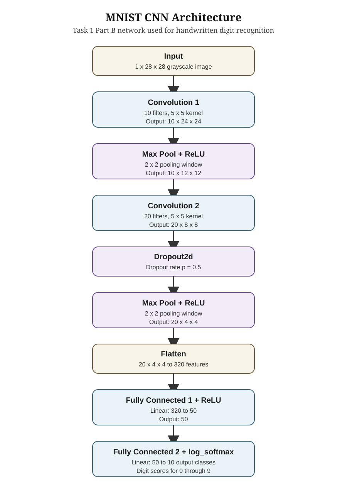
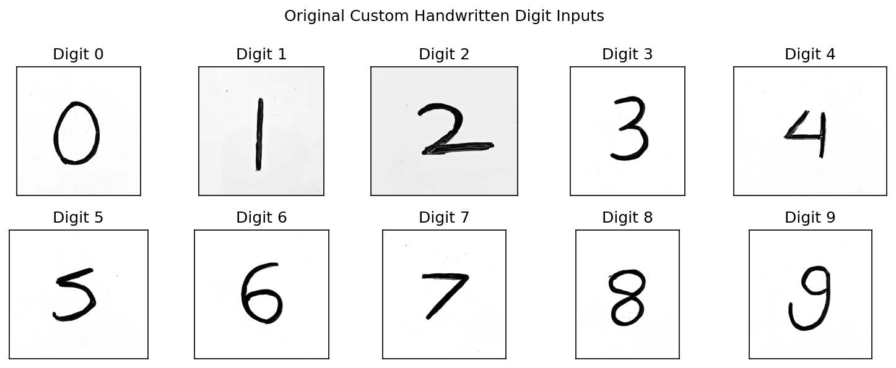
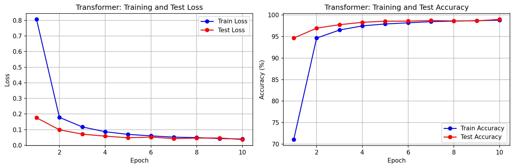

Name: Joseph Defendre, Sourav Das
Date: April 2026
This project explores deep learning for image recognition using the MNIST digit dataset and PyTorch. We built and trained a convolutional neural network (CNN) to classify handwritten digits, achieving over 98% test accuracy within 5 epochs. We then examined the learned filters and their effects on input images, applied transfer learning to recognize Greek letters (alpha, beta, gamma) using the pre-trained MNIST network, and re-implemented the classifier using a Vision Transformer architecture with patch embeddings. Finally, we conducted a systematic experiment evaluating network architecture variations along three dimensions which are filter counts, dropout rate, and hidden layer size, by using Fashion MNIST to compare the impact of each design choice on classification accuracy.
Loaded the MNIST dataset via torchvision.datasets.MNIST, which provides 60,000 training images and 10,000 test images of 28×28 grayscale handwritten digits. The Task 1 Part A script loads the test split without shuffling so the same six examples are shown each time. Images are normalized using mean=0.1307 and std=0.3081. The required plot of the first six example digits from the MNIST test set is included below.
The network architecture follows the specification from the assignment. The MyNetwork class inherits from nn.Module and implements the required convolution, pooling, dropout, flattening, and fully connected stages shown below. The architecture was also verified with a standalone Task 1 Part B script that prints the model and confirms the output shape after each stage for a 28×28 MNIST input.

The first convolution learns 10 edge/texture detectors from the raw pixel input. After max pooling, the second convolution learns higher-order features from the first layer's activations. Dropout (50%) during training prevents co-adaptation of feature detectors. The fully connected layers map the 320-dimensional flattened feature vector to 10 digit classes via a 50-node hidden layer.
The model was trained for 5 epochs using SGD with learning rate 0.01, momentum 0.5, and batch size 64. After each epoch, the code evaluates both the training set and the test set and records loss and accuracy. Over the 5 epochs, training loss dropped from 0.6921 to 0.1224 while test loss dropped from 0.1746 to 0.0583. Test accuracy improved from 94.52% in epoch 1 to 98.05% by epoch 5. The training script saves both the combined loss/accuracy plot and the underlying per-epoch values for reproducibility.

After training, the network weights are saved to results/mnist_model.pth using torch.save(model.state_dict(), ...). A separate Task 1 Part D verification script confirms that this file exists and that the saved weights can be loaded back into the MyNetwork architecture successfully. This saved model is then reused in the later tasks without retraining.
The saved model was loaded in evaluation mode so dropout was disabled, then the first 10 examples from the MNIST test set were passed through the network in a separate Task 1 Part E script. For each example, the 10 output log-probabilities, predicted class, and true label are printed. The current trained model correctly classified all 10 examples. The printed output is also saved to a text file for reproducibility.
Idx | Network Output (10 values) | Pred | True | Match ------------------------------------------------------------------------------------- 0 | -18.82 -19.94 -10.28 -10.20 -22.20 -19.58 -36.71 -0.00 -15.41 -11.48 | 7 | 7 | YES 1 | -9.21 -9.83 -0.00 -12.49 -25.06 -19.59 -13.04 -19.84 -12.21 -24.75 | 2 | 2 | YES 2 | -13.40 -0.00 -9.82 -13.43 -9.56 -14.10 -11.70 -8.31 -10.18 -12.65 | 1 | 1 | YES 3 | -0.00 -21.49 -12.39 -17.56 -20.14 -14.18 -13.87 -14.77 -17.10 -12.56 | 0 | 0 | YES 4 | -17.05 -19.27 -16.02 -16.75 -0.00 -14.67 -14.88 -13.65 -15.05 -6.41 | 4 | 4 | YES 5 | -17.36 -0.00 -13.18 -16.09 -10.83 -18.17 -16.99 -9.76 -12.08 -14.10 | 1 | 1 | YES 6 | -24.65 -13.61 -17.54 -19.26 -0.00 -13.39 -19.14 -12.43 -9.26 -6.51 | 4 | 4 | YES 7 | -18.60 -13.11 -11.46 -9.22 -5.90 -8.82 -19.37 -10.53 -8.72 -0.00 | 9 | 9 | YES 8 | -9.26 -22.03 -12.32 -16.47 -13.25 -0.00 -7.73 -16.29 -7.79 -8.33 | 5 | 5 | YES 9 | -21.36 -22.79 -16.51 -11.84 -7.55 -14.17 -27.28 -7.26 -8.53 -0.00 | 9 | 9 | YES

Ten digits (0–9) were written by hand using a thick marker on white paper, photographed, and cropped to individual square images. Each image was converted to grayscale, intensity-inverted to match the MNIST format (white digits on black background), contrast-adjusted, resized into a centered 28×28 canvas, and normalized with the same MNIST mean and standard deviation before being passed through the network. On these custom inputs, the model correctly classified 7 of the 10 digits (70.0% accuracy). In this run, digits 0, 5, and 8 were misclassified as 9.


Note: Custom digit images should be placed in the custom_digits directory using filenames 0 through 9 with a common image extension such as PNG, JPG, JPEG, or BMP before running the Part F script.
The first convolutional layer (conv1) was accessed directly from the loaded model using model.conv1.weight. Its weight tensor has shape [10, 1, 5, 5], meaning there are 10 learned filters, 1 input channel, and each filter is 5×5 pixels. The full weight values and tensor shape were printed and saved to a text file, and the 10 filters were visualized in a 3×4 grid as required. Several filters appear to detect oriented edges at various angles, while others respond to specific spatial patterns or intensity gradients.

Each of the 10 filters was applied to the first training example using OpenCV's filter2D function. The first training example is the digit 5, shown in the first panel of the figure. The resulting filtered images show how each filter responds to different features in the digit. Edge-detecting filters highlight strokes and contours, while others produce more uniform or textured responses depending on the local structure of the digit.

The results make sense given the filter weights: filters with strong horizontal gradients emphasize horizontal strokes, while those with diagonal structure highlight angled features. The diversity of filter responses explains how the network builds a rich representation from a single input image.
To classify Greek letters (alpha, beta, gamma) using the pre-trained MNIST network, we: (1) loaded the MNIST-trained MyNetwork model, (2) froze all parameters, (3) replaced the last fully connected layer (fc2) with a new nn.Linear(50, 3) layer for 3-class output, and (4) trained only that final layer on the 27 provided Greek-letter examples. This follows the assignment requirement to reuse the MNIST feature extractor and learn a new 3-class classifier on top of it.
The 27 Greek letter training images (133×133, RGB) were preprocessed using the provided GreekTransform class, which converts to grayscale, scales down, center-crops to 28×28, and inverts intensities to match MNIST format. The data were loaded with torchvision.datasets.ImageFolder, using batch size 5 and SGD with learning rate 0.01 and momentum 0.5.
Modified Network: MyNetwork( (conv1): Conv2d(1, 10, kernel_size=(5, 5)) (conv2): Conv2d(10, 20, kernel_size=(5, 5)) (conv2_drop): Dropout2d(p=0.5) (fc1): Linear(in_features=320, out_features=50) (fc2): Linear(in_features=50, out_features=3) ← replaced )

In the completed training run, the network first reached 100% training accuracy at epoch 14. Because the dataset is extremely small and the dropout layer remains active during training, the reported accuracy fluctuated between 88.9% and 100.0% across later epochs before ending at 100.0% on epoch 200. This behavior is expected: the frozen MNIST convolutional layers already provide useful edge and shape features, so the new 3-output layer learns quickly, but the small data size makes the per-epoch metric noisy.
Additional user-provided alpha, beta, and gamma images were then evaluated from the custom_greek directory. To better match the training distribution, each photo was converted to grayscale, histogram-equalized, resized to 128×128, and then passed through the same GreekTransform used for the provided dataset. On these six handwritten examples, the model correctly classified 5 of 6 images (83.3% accuracy). Both alpha examples, one beta example, and both gamma examples were classified correctly; only the second beta image was misclassified.

The additional-example results remain weaker than the 27-image training-set performance, which suggests the transfer-learned classifier is still somewhat sensitive to stroke style and shape variation. That gap is plausible given the tiny training set and the fact that only the final classification layer was retrained, but the improved preprocessing substantially reduced the mismatch between the photographed inputs and the provided Greek training images.
The CNN was re-implemented as a Vision Transformer (NetTransformer) using the provided template structure. Following the assignment steps, the image is divided into overlapping 4×4 patches with stride 2, producing 169 patch tokens from each 28×28 MNIST image. Each patch is flattened and projected into a 48-dimensional embedding, positional embeddings are added, and the token sequence is processed by a 4-layer Transformer encoder with 8 attention heads and MLP dimension 128. Because the default template uses token averaging instead of a CLS token, the encoder outputs are averaged into one image representation before the final classifier.

With the template default settings (patch_size=4, stride=2, embed_dim=48, depth=4, heads=8, mlp_dim=128, dropout=0.1, and no CLS token), the Transformer contained 104,842 trainable parameters. Using AdamW with learning rate 0.001 and weight decay 0.0001, it reached 93.74% test accuracy after epoch 1, exceeded 98% by epoch 5, and achieved its best and final test accuracy of 98.93% at epoch 15. The final training accuracy was 98.86% and the final test loss was 0.0352.
This default transformer slightly outperformed the earlier CNN test result reported in Task 1 while using a completely different feature-extraction mechanism. The result shows that self-attention over local image patches can classify MNIST digits very effectively even without any convolution layers, although the transformer training run was noticeably heavier because the overlapping patches produce a much longer token sequence.
We conducted a systematic experiment on Fashion MNIST to evaluate the effect of three network architecture dimensions. Fashion MNIST was chosen over MNIST digits because it is more challenging and provides more room to observe the impact of architecture changes.
We used Fashion MNIST and a two-pass linear search strategy: optimize one dimension at a time while holding the others fixed at the current best, then run a refined sweep around the best coarse value. The base configuration was filters=(10,20), filter_size=5, fc_hidden=50, dropout=0.5, and pool_size=2. To keep the search tractable while still covering the assignment target range, the exploratory sweeps trained on a fixed 12,000-image subset of the Fashion MNIST training set for 2 epochs per configuration with SGD (lr=0.01, momentum=0.5, batch size 128), while every configuration was still evaluated on the full 10,000-image test set. This produced 52 search runs across the three dimensions, followed by 2 full-data confirmation runs (baseline and final best), for 54 total trained networks.
The best architecture selected by the search was filters=(40,80), dropout=0.10, and fc_hidden=48. When retrained on the full Fashion MNIST training set for 5 epochs, this configuration reached 85.15% test accuracy, compared with 82.88% for the original baseline CNN, for a gain of 2.27 percentage points.

Dimension 1 (Filters): The number of filters had the strongest positive effect. On the subset-based search, accuracy rose from 30.03% with (4,8) filters to 71.96% with (40,80), while per-run training time increased from about 3.0s to about 6.4s. This strongly supported the hypothesis that larger filter banks help the network capture more useful Fashion MNIST features, although the gains began to taper at the high end.
Dimension 2 (Dropout): The best dropout rate was 0.10, which reached 72.43% on the search subset. Performance stayed competitive for several nearby values, but the lowest tested high-dropout setting did not win, so the hypothesis was only partially supported. The search suggests Fashion MNIST benefits from a small amount of regularization in this CNN, but not from the heavier 0.3–0.5 range originally expected.
Dimension 3 (Hidden size): The best hidden-layer size was 48 nodes at 72.46% search accuracy. Very large hidden layers performed noticeably worse, dropping to 63.38% at 256 nodes, which supports the diminishing-returns hypothesis. In this setting, once the convolutional front-end was strong enough, a modest dense layer was sufficient and larger fully connected stages mostly added optimization difficulty and parameters.
We implemented the Task 4 extension suggested in the assignment by making both the patch embedding and classification stage more sophisticated. Instead of extracting tokens only with a direct patch-linear projection, the extension adds a small convolutional stem before tokenization: a 3×3 convolution first produces 24 local feature channels, followed by a 7×7 stride-4 convolution that projects the image into 64-dimensional patch tokens. This produces only 36 tokens per image instead of the 169 tokens used by the default transformer, while still letting the model learn local structure before the self-attention layers.
We also switched from token averaging to a learned CLS token and replaced the original single-hidden-layer classifier with a deeper head: 64 → 160 → 80 → 10 with GELU activations and dropout after each hidden layer. This keeps the encoder at 4 transformer layers and 8 heads, but gives the model a more expressive way to summarize the image and separate the digit classes after attention.

The extension model contained 252,618 trainable parameters and reached 98.95% test accuracy after 10 epochs, with final training accuracy 98.75% and final test loss 0.0361. Its best accuracy was slightly higher than the default transformer result from Task 4 (98.95% vs. 98.93%), while using a much shorter token sequence. That suggests the more structured patch embedding and stronger classifier head preserved or slightly improved recognition performance while reducing the amount of self-attention work per image.
This project provided a comprehensive hands-on introduction to deep learning for computer vision. Building the CNN from the ground up in PyTorch made the roles of convolution, pooling, dropout, and fully connected layers concrete. Watching the training loss decrease and accuracy climb over epochs gave an intuitive feel for how gradient descent optimizes network parameters.
Examining the first-layer filters revealed that the network learns interpretable edge detectors resembling Gabor filters, which was satisfying to see emerge from random initialization through backpropagation alone. The filter effect visualization confirmed that these learned features meaningfully decompose the input into orientation-sensitive components.
Transfer learning demonstrated the power of feature reuse: the convolutional layers trained on digits already extracted useful edge and shape features that transferred directly to Greek letter recognition. Only retraining the final classification layer was sufficient to achieve near-perfect accuracy on 27 examples, highlighting how pre-trained features generalize across related visual tasks.
Implementing the Transformer architecture gave us a better understanding of how self-attention can serve as an alternative to convolution for image classification. In this project, the baseline Transformer was able to slightly outperform the CNN on MNIST, and the extension with a convolutional patch stem, CLS token, and deeper classifier head improved the result a little further. At the same time, these models also made it clear that Transformers involve different design choices and can be more computationally expensive to train, even on a relatively simple dataset like MNIST.
The architecture experiment on Fashion MNIST reinforced the importance of systematic evaluation. The linear search strategy allowed efficient exploration of the design space, and the results confirmed general deep learning intuitions about capacity, regularization, and diminishing returns. Automating the evaluation process was valuable for maintaining consistency and enabling reproducibility.
Time travel days used: 0